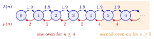

Birth-Death Queue¶
Definition¶
A birth-death queue, called the queue in the course notes, is a model for the number of jobs in which jobs arrive and leave one at a time and, given , the time to the next arrival is exponential with rate and the time to the next departure is exponential with rate . As ,
where is the rate at which jobs enter in state ; without blocking, . Arrivals are "births" and departures "deaths". The exponential models of Kendall's notation, and others such as a finite calling population, differ only in the choice of the two rate functions:
| Model | ||
|---|---|---|
| finite calling population |
Interpretation¶
One template covers many queues: the state is the number of jobs, it moves up or down by one, and all the modelling goes into two rate functions. Choosing says who may enter and how eagerly; choosing says how much service capacity is working when jobs are present.

The figure shows the controlled two-oven policy of Example 1. Jobs arrive at rate per hour in every state. Up to four jobs one oven works and ; from five jobs on, in the orange region, the second oven is switched on and . The other three policies change only these rates.
Memoryless times are what make the rates enough. Given , the remaining times to the next arrival and departure are exponential whatever happened before, so the future depends on the past only through . With busy servers, each finishing at rate , the minimum of independent exponentials gives the total departure rate ; this is where comes from. Inter-arrival times need not be identically distributed: may change with the state (True/False 5.1.1). The stationary probabilities follow from the stationary-probability recursion with , provided the normalizing sum is finite; a system that blocks at a finite level always satisfies this.
Two slips are common. Arrivals that are blocked still arrive, so they count in but not in . And arrivals see time averages only when , which PASTA guarantees for Poisson arrivals; when the arrival rate depends on the state, as with a finite calling population, in general.
Key Results¶
- Stationary probabilities: , solved by the stationary-probability recursion; for a birth-death queue these level-crossing equations are equivalent to the balance equations.
- Mean acceptance rate (equation 5.1.4): ; this is the throughput, and Little's law uses it: and .
- Single server with : utilization is (equation 5.1.5), which is below the load when jobs are blocked.
- When arrivals form a Poisson process, also in blocking states, so by PASTA and the fraction of arrivals blocked at capacity is . With state-dependent arrival rates, .
- Without blocking, a stationary distribution requires a finite normalizing sum; for constant arrival rate and servers this is .
Examples¶
1. Riley's oven (Section 5.2). Jobs arrive at per hour and an oven treats them at rate . The four policies of the notes are four choices of rates:
| Policy | (hours) | ||||
|---|---|---|---|---|---|
| one oven | |||||
| capacity | |||||
| two ovens | |||||
| second oven on for | for , for |
For the controlled policy the step ratio is up to state 4 and beyond, so for and for . Then , so : the first oven is busy of the time and the second . With about of the jobs are rejected, which is why in that row.
2. Taxis at a hotel (True/False 4.6.1). Taxis arrive at rate 15 per hour and parties of riders at rate 12 per hour; a waiting taxi takes an arriving party at once, a waiting party takes an arriving taxi at once, and at most three taxis wait. Let . A party arrival always raises by one, and a taxi arrival lowers it by one unless three taxis already wait (), when the taxi leaves. So and for : an queue with and . By PASTA an arriving party has to wait when , which has probability , and the mean number of waiting parties is .
3. When arrivals do not see time averages. Two machines each fail at rate per day and one mechanic repairs at rate per day, so and for . The weights give . The failure rate is per day, and a failing machine finds the shop empty with probability , not .
Prerequisites¶
- Stationary-Probability Recursion
- Kendall's Notation
- Exponential Distribution
- Minimum of Independent Exponentials
Related Concepts¶
- M/M/1 Queue
- M/M/c Queue
- M/M/1/K Queue
- Erlang B Model
- M/M/Infinity Queue
- Finite Calling Population
- Balking
- Balance Equations
Sources¶
- Stochastic Operations Research · Week 4
- N. D. van Foreest, Sample Path Analysis and Simulation of Stochastic Systems, Sections 5.1 and 5.2
Aliases: M(n)/M(n)/1 queue, birth-death process, birth and death queue, state-dependent Markovian queue, Markovian queue with state-dependent rates Keywords: M(n)/M(n)/1, \lambda(n), \lambda^+(n), \mu(n), birth rate, death rate, nearest-neighbour transitions, threshold policy, acceptance rate Symbols: delta, infinity, lambda, mu, pi, rho, sum
Last updated: 29 October 2026 20:42
Birth-Death QueueErlang B ModelFinite Calling PopulationM/M/1 QueueM/M/c QueueM/M/Infinity QueueStationary-Probability RecursionKendall's NotationExponential DistributionMinimum of Independent ExponentialsM/M/1/K QueueBalkingBalance Equations